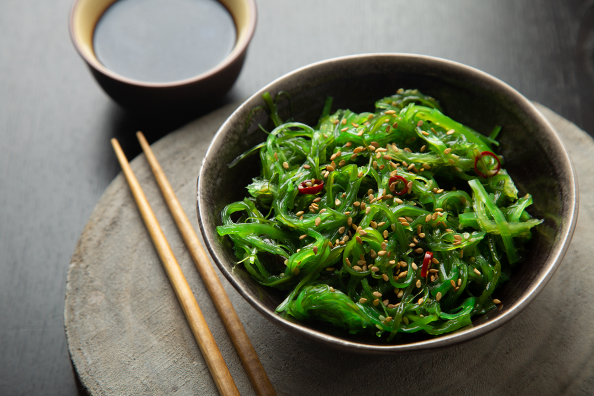

seaweed salad

Mixed seaweeds with vinegar dressing, often served with seafood.
ingredients
- 50g dried mixed seaweed (soaked and drained),
- 2 tbsp rice vinegar,
- 1 tbsp soy sauce,
- 1 tbsp sesame oil,
- 1 tbsp sugar,
- 1 tsp grated ginger,
- 1 tbsp toasted sesame seeds.
instructions
- Rehydrate the seaweed in warm water for about 10 minutes, then drain and squeeze out excess water.
- Mix the rice vinegar, soy sauce, sesame oil, sugar, and grated ginger together to make the dressing.
- Toss the seaweed in the dressing, and spinkle with toasted sesame seeds before serving.